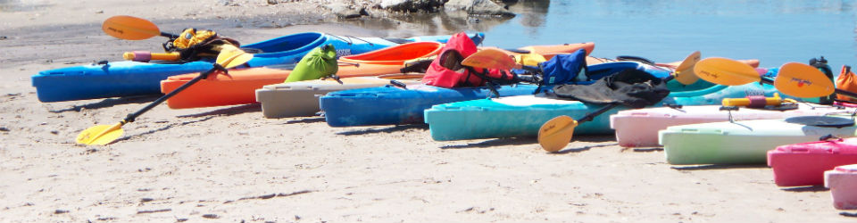

Interests
Kayaking
There's nothing like taking a few friends and going kayaking. Whether or not you like a relaxing paddle on pond or a work out riding down the rapids there's something for everyone. It's also super relaxing, you can sit back and enjoy nature. Another huge part of kayaking that I think is awesome is the fact that you can get away from everything and take a breath in peace by yourself.
